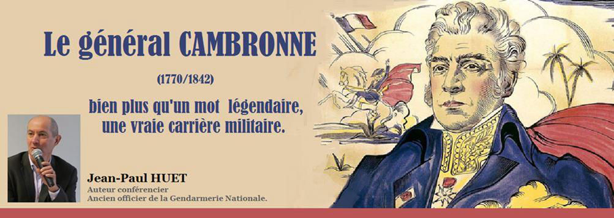
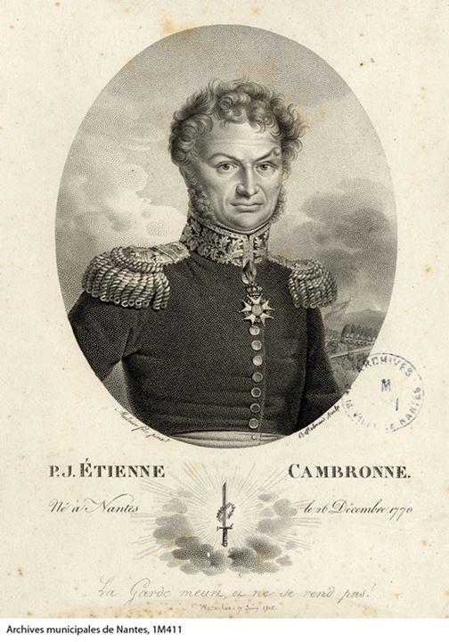
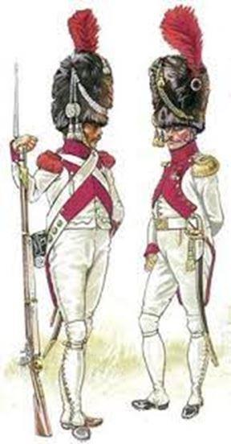
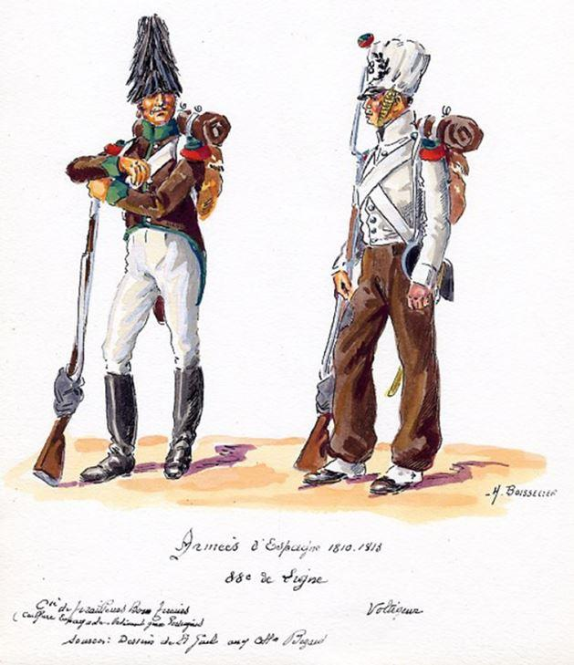
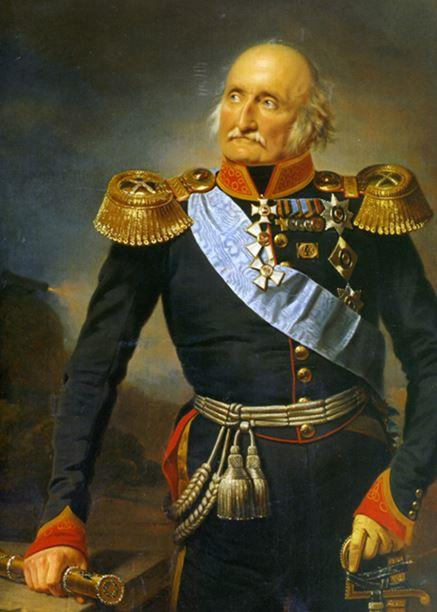
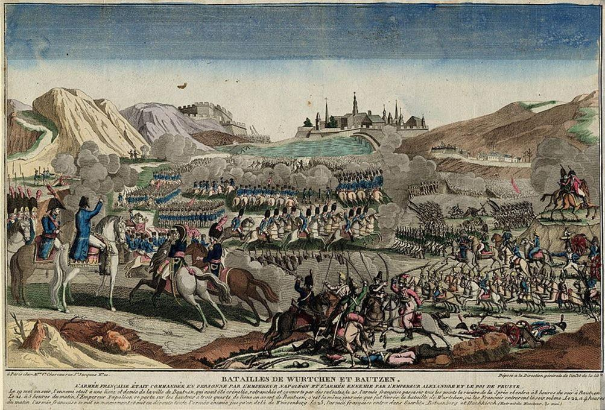
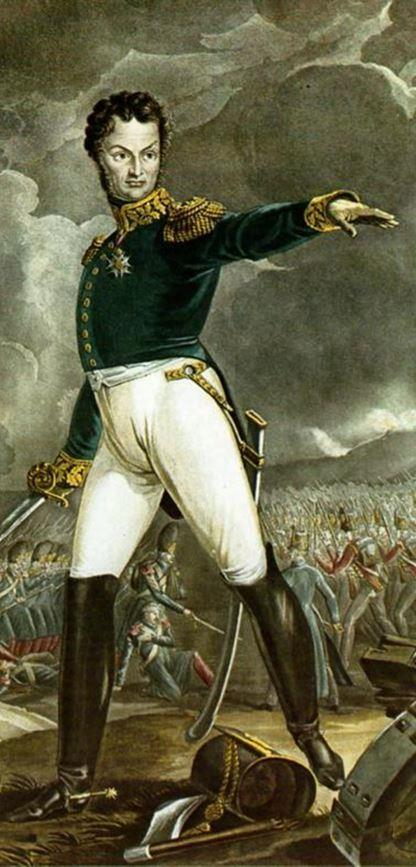
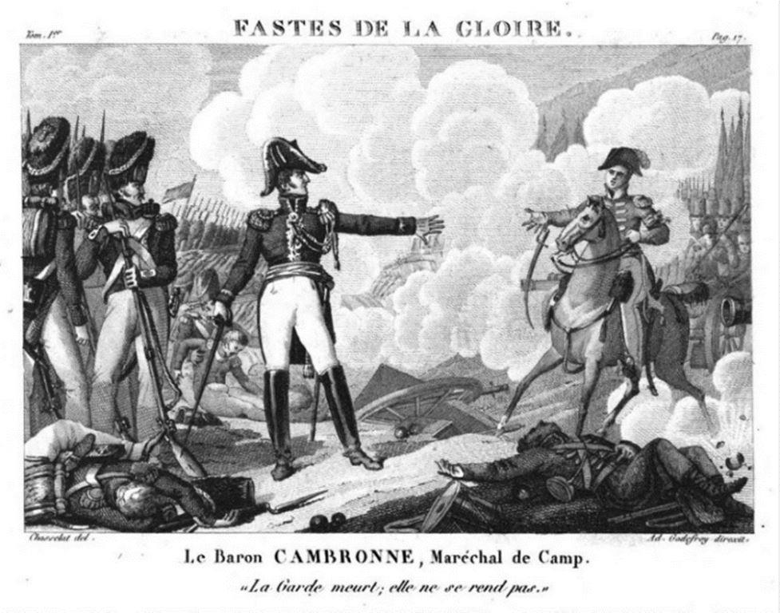
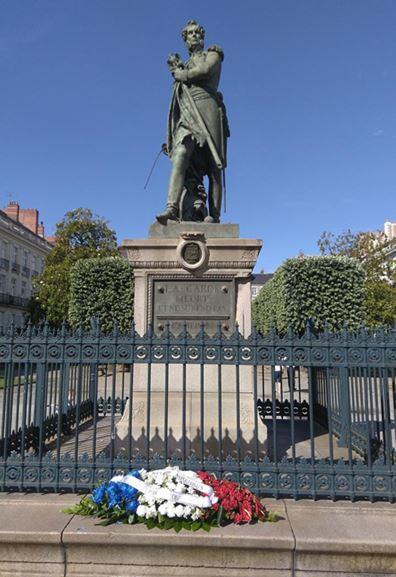
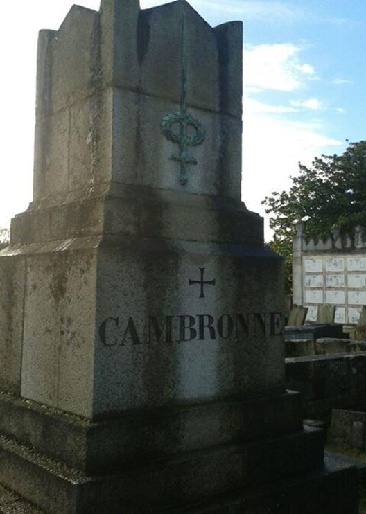

Le général Cambronne (1770/1842) : bien plus qu’un mot légendaire, une vraie carrière militaire
par Jean-Paul HUET

Cambronne. À l'évocation de ce nom, dans la mémoire collective et populaire, ce valeureux et vaillant officier de la Grande Armée est synonyme pour l'éternité d'une grossièreté qui aurait été prononcée le 18 juin 1815 sur le champ de bataille de Waterloo. C'est fort dommage, car le destin et la vie de cet enfant de la Révolution, originaire de Nantes, méritent beaucoup mieux que d'être sans cesse réduits à ce mot vulgaire dont Victor Hugo s'est fait le chantre. Assurément, Pierre Cambronne¹ est un personnage essentiel et important du Premier Empire, cependant il reste mal connu. Et pourtant, ses états de service et ses nombreuses campagnes sont là pour rappeler sa très belle carrière militaire et sa bravoure indéniable.
À lui seul, il représente quinze années d'épopée et de pérégrinations napoléoniennes. Dans le sillage de l'Empereur, il a participé aux pages les plus glorieuses mais aussi aux désillusions du Consulat et de l'Empire. A ce titre, toujours au cœur de l'action, il fut un soldat fidèle, un officier de grande valeur et l'un des plus braves généraux de Napoléon Bonaparte et de la Grande Armée.
Les origines familiales
Pierre Cambronne naît le 26 décembre 1770 à Nantes -44-, ville industrielle et ouvrière. Sa famille, aisée mais sans fortune, fait partie à cette époque de la petite bourgeoisie de commerce du XVIIIème siècle. Les Cambronne exercent la profession de commerçant, plus exactement
l'activité de négociant en bois. Adolescent, le jeune Cambronne est scolarisé au prestigieux collège de l'Oratoire de Nantes (qui a également accueilli en son temps un certain Joseph Fouché). A 18 ans, dans la lignée familiale, il devient lui-aussi négociant. Néanmoins, parallèlement, notre jeune ligérien est très attiré par l'élan pré-révolutionnaire qui secoue la France. Cet événement va bouleverser sa vie.
Débuts d'une carrière militaire
En janvier 1789, d'un caractère entier, c'est un jeune citoyen engagé, ténébreux et bagarreur. En septembre 1791, à l'âge de 20 ans, il entre dans la carrière militaire qui sera tout sauf linéaire. La Révolution a besoin de soldats volontaires. Après un bref passage au 1er bataillon des volontaires de la Loire-inférieure, en juillet 1792, il intègre le 1er bataillon de Mayenne et Loire. C'est au sein de cette unité que le jeune Cambronne connaît son baptême du feu. Le 6 novembre 1792, il prend part à la victorieuse bataille de Jemmapes en Flandres. Le 13 juin 1793, il intègre la Légion nantaise avec le grade de sergent. Peu de temps après, il participe activement aux différents combats fratricides contre les Vendéens. Sa bravoure et son ardeur aux combats précipitent sa carrière : Le 10 septembre 1793, en récompense, il accède à l'épaulette. A 23 ans, il est promu lieutenant. Indiscutablement, Cambronne fait partie de ceux à qui la Révolution et l'Empire ont offert l'opportunité d'une ascension fulgurante et qui ont su la saisir. A ce titre, c'est Bonaparte qui dira : « Pourquoi l'armée française est-elle la plus redoutée du monde...c'est parce que les officiers ont émigré et ont été remplacés par des sous-officiers qui sont devenus généraux. C'est avec des sous-officiers que l'on mène une armée nationale parce qu'ils sont sortis du peuple. »
Cependant, au fur et à mesure, la Révolution, à laquelle il a pourtant adhéré, le laisse sur la réserve. Il souffre des excès des révolutionnaires. Cette période ne lui plaît pas, il veut bien combattre mais d'abord l'ennemi de l'étranger. On lui prête d'ailleurs cette réplique : «la patrie peut me demander jusqu'à la dernière goutte de mon sang mais elle ne peut exiger que je me fasse bourreau et assassin ». Dans les années 1794-1796, on le retrouve notamment à Quiberon et surtout à l'expédition maritime d'Irlande sous le commandement du général Hoche. Force est de reconnaître que pour cet homme attaché à la terre ferme, l'expérience fut un peu douloureuse. En mars 1797, commence pour le capitaine Cambronne une nouvelle étape dans sa carrière. On le retrouve à la 46ème demi-brigade d'infanterie de ligne. Le 19 mai 1798, par son énergie et sa témérité, il s'illustre à Ostende.
1799, une deuxième coalition contre la France se forme. Elle regroupe l'Angleterre, la Russie, l'Autriche, la Turquie, les Deux-Siciles et la Suède. La 46ème demi-brigade de Cambronne est engagée dans la campagne d'Helvétie sous les ordres d'un certain Masséna. Les 24-25-26 septembre 1799, l'armée affronte à Zurich les forces austro-russes commandées par le général russe Korsakov (1753/1840).
Le capitaine Cambronne, démontrant allant et fougue, se distingue et participe activement à la victoire en enlevant notamment deux canons russes. Quelques jours plus tard, le 7 octobre, confrontés une nouvelle fois à l'armée russe du général Souvarov, au lieu-dit «Paradis», Cambronne et ses hommes, grâce à une manœuvre audacieuse, enlèvent 5 drapeaux et 2 canons à l'ennemi.
 Grenadiers de la 3ème compagnieAu lendemain du coup d'état du 18 Brumaire (9/10 novembre 1799), portant au pouvoir le général Bonaparte, Cambronne et sa 3ème compagnie de Grenadiers sont engagés dans de nombreuses batailles menées dans le cadre de la guerre de la Seconde Coalition. On les retrouve notamment en 1800 à Engen, Moeskkirch, Nordligen, Oberhausen. A chaque fois, Cambronne se fait remarquer ; son ardeur au combat, son inébranlable courage et son énergie forcent l'admiration de ses chefs et de ses soldats. Incontestablement, grâce à ses jolis faits d'armes et ses actions d'éclat, l'officier nantais se taille peu à peu une solide réputation.
Sa carrière au sein de la Grande Armée
Le 26 mars 1802, la paix d'Amiens est signée. Après 10 années de guerres révolutionnaires, une période de calme s'ouvre sur l'Europe, jusqu'en...mai 1803 où une troisième coalition prend forme. À ce moment, Cambronne a rejoint le camp de Boulogne. Dans les années qui suivent, promu le 30 août 1805 au grade de chef de bataillon, il s'illustre au sein du 88ème régiment d'infanterie et prend part à de nombreuses batailles éclatantes, abondamment étudiées, telles que Ulm (19/10/1805), Austerlitz (2/12/1805), Iéna (14/10/1806).
Preuve de ses aptitudes, Napoléon, en parlant de cet officier aurait dit : «Pardieu ! Voilà un noble soldat. Que ne ferait-on pas avec de tels hommes !».
Par décret impérial du 16 janvier 1807, Cambronne est nommé officier dans l'ordre de la Légion d'honneur. C'est le moment pour lui de participer à la malheureuse et peu glorieuse campagne d'Espagne (1808/1814) qui reste un des plus cuisants échecs de Napoléon Bonaparte. Le chef de bataillon Cambronne y reste jusqu'en 1809, avant de rentrer en France. Le 11 avril 1809, par décret, il est nommé au 1er régiment de tirailleurs-chasseurs de la Garde impériale (qui prendra plus tard l'appellation de voltigeurs) qui relève des chasseurs à pied de la Garde. A 39 ans, il intègre le corps le plus illustre de la Grande Armée. Cerise sur le gâteau, il est promu lieutenant-colonel. Lors de cette année 1809, Cambronne se signale encore aux batailles meurtrières d'Essling et de Wagram. Par décret du 15 mars 1810, il reçoit en récompense de ses mérites militaires le titre de baron d'Empire. Avec la jeune Garde impériale, il reprend de nouveau le chemin de l'Espagne pour combattre la guérilla espagnole. Il va y rester quelques mois jusqu'en 1813. De fait, contrairement à ce que l'on peut lire parfois, Cambronne n'a pas participé à la campagne de Russie en 1812.
De retour du bourbier espagnol, il prend part à la campagne de 1813 en Allemagne et plus précisément dans la province de Saxe. Après s'être battu à Lützen (2/05/1813), Cambronne combat à la difficile bataille de Bautzen où il va particulièrement se distinguer.
La bataille de Bautzen
Les 21 et 22 mai 1813, après s'être emparée de Dresde quelques jours plus tôt, l'armée impériale (environ 180 000 hommes) s'oppose à Bautzen, province de la Saxe, aux troupes russo-prussiennes (environ 100 000 hommes) commandées par le général russe Wittgenstein (1742-1819). Sous les ordres du maréchal Mortier, au sein de la jeune garde impériale, le colonel Cambronne et ses hommes du 3ème régiment de voltigeurs se signalent en maintes circonstances par leur ardeur et leur efficacité.
Après des combats intenses et meurtriers, souvent à la force des baïonnettes, Cambronne et ses voltigeurs s'emparent des redoutes et des fortifications de Baschutz, défendues âprement et vaillamment par les gardes et grenadiers russes.
Ce coup d'éclat contribue au succès final d'une bataille de Bautzen coûteuse en hommes et en matériel. Cependant, une fois encore, au grand désespoir de ses généraux, faute de cavalerie (répétition de la bataille de Lutzen), l'Empereur ne peut exploiter ce succès et doit laisser les forces russo-prussiennes se replier et s'enfuir vers la Silésie sans être poursuivies. Néanmoins, ces succès de l'armée impériale sont inespérés. En effet, après la campagne de Russie, personne ne donnait cher de l'armée de Napoléon, décimée. Et pourtant, en l'espace de trois semaines, l'armée impériale inflige deux défaites aux Russes et aux Prussiens. Conséquence des batailles de Lützen et de Bautzen, le 4 juin 1813, un armistice est signé à Pleizwitz .
Cette trêve va permettre à chaque camp de recentrer ses forces. Comme on peut s'en rendre compte, dans cette campagne de Saxe, Cambronne, constamment en première ligne à la tête des voltigeurs, indomptable, démontre une fois de plus ses grandes qualités de combattant et de meneur d'hommes. Une chose est certaine, sur le champ de bataille, il sait se faire entendre lorsqu'il donne des ordres. Et gare à celui qui ne l'écoute pas car il pouvait avoir parfois l'énergie un peu rude envers ses hommes ! En récompense de sa bravoure et de son intrépidité, Napoléon, par décret du 14 septembre 1813, le nomme colonel-major du 2ème régiment des chasseurs à pied de la vieille Garde. 2 mois plus tard, après la bataille d'Hanau (30/31 octobre 1813), il est nommé au grade de général de brigade ! A l'âge de 43 ans, il atteint la consécration militaire.
En 1814, pendant la campagne de France, une des plus belles de l'Empereur, le général Cambronne à la tête d'un des plus prestigieux régiments, le 1er régiment de chasseurs à pied, est blessé à trois reprises. Malgré cette magnifique campagne de France, le 11 avril 1814, au château de Fontainebleau, la mort dans l'âme, l'Empereur est contraint d'abdiquer et forcé de s'exiler sur l'île d'Elbe. Par fidélité à Napoléon, sans hésitation aucune, Cambronne fait le choix d'accompagner l'Empereur déchu dans son exil; cette décision est tout sauf étonnante. Sur cette île minuscule de 224 km2, il est nommé commandant du «bataillon Napoléon» chargé, entre autres tâches, de la garde de l'Empereur sur l'île. Il va exécuter cette mission avec rigueur voire parfois excès de zèle.
Le 1er mars 1815, on le sait, c'est le retour en France de Napoléon Bonaparte, le triomphe de la marche sur Paris sans tirer un coup de feu et la période des «Cent-Jours».
La bataille de Waterloo
Le 15 juin 1815, la campagne de Belgique est lancée. Le 16, à Ligny, l'Empereur remporte sa dernière victoire. Le 18 juin, sous d'énormes pluies, un sol boueux, a lieu la fameuse bataille de Waterloo. On connaît la suite, commencée vers onze heures, elle sera fatale à l'Empereur et sonnera son glas. Sur le champ de bataille de Waterloo, en fin d'après-midi de ce 18 juin 1815, Cambronne va connaître la gloire à la fin des combats; c'est d'ailleurs le point de départ de sa légende. A la tête d'un des nombreux carrés de la Vieille Garde, au milieu de ses hommes, alors que se profile la retraite, sinon la déroute de l'armée de Napoléon, il refuse catégoriquement de se rendre et de répondre favorablement aux sommations répétées des Anglais. On lui prête ce jour-là cette réponse théâtrale, apocryphe, mais pétrie d'honneur militaire : «La Garde meurt mais ne se rend pas !» Plus encore, on lui attribue un mot grossier de cinq lettres, le fameux «Merde !» qui, deux cents ans plus tard, reste encore aujourd'hui attaché à son nom et qu'il a pourtant toujours démenti avoir prononcé.
Ce 18 juin 1815, lors de l'ultime charge de ses grenadiers et chasseurs, Cambronne est sérieusement blessé. Capturé, il est fait prisonnier par les hommes de la brigade hanovrienne du colonel Halckett. Dans un premier temps conduit à Bruxelles, le général Cambronne est finalement emmené en Angleterre et assigné à résidence à Ashburton, ville du Devonshire. Le 20 juillet 1815, il adresse au roi Louis XVIII (1755/1824) une lettre dans laquelle il sollicite son retour en France. Condamné le 24 juillet 1815 par ordonnance royale d'avoir porté les armes contre la France et le gouvernement légitime, il réfute cette accusation et veut plaider sa cause. Le 17 décembre 1815, de retour en France, il est écroué à la prison de l'Abbaye où il retrouve le général Drouot, son ancien chef de l'île d'Elbe. A l'issue d'une instruction de 4 mois, le procès de Cambronne s'ouvre le 26 avril 1816. Étonnamment, contre toute attente, grâce notamment à l'éloquence de son avovat Berryer, le verdict final acquitte Pierre Cambronne.

Les dernières années de sa vie
De retour dans sa ville natale de Nantes, Pierre Cambronne se marie en 1820 avec Mary Osburn, une aristocrate native de Glasgow en Ecosse. Puis, réintégré dans l'armée, il est nommé par le roi Louis XVIII commandant de la 1ère subdivision de la 16ème division militaire à Lille. Il y reste jusqu'en 1822, date de son retour définitif sur Nantes, non sans avoir été nommé vicomte par Louis XVIII le 17 août de la même année. En 1836, suprême honneur, le nom de Cambronne est inscrit sur le pilier nord de l'Arc de Triomphe à Paris. Atteint d'une pneumonie, il rend son dernier soupir le 29 janvier 1842, à l'âge de 71 ans. Il est enterré au cimetière de la Miséricorde de Nantes.
Le 23 juillet 1848, la ville de Nantes élève une imposante statue en l'honneur de son brillant général. Cette statue représente « le général tête nue, tenant à la main droite son épée, serrant sur sa poitrine, de la main gauche, l’aigle impérial dont la hampe s’est brisée dans la lutte et foulant aux pieds des éclats de bombe ».

Statue du général Cambronne. Cours Cambronne à Nantes. Photo de l'auteur

Cimetière de la Miséricorde. Nantes – photo de l'auteur
Conclusion
Du soleil d'Austerlitz au crépuscule de Waterloo, en passant par les campagnes d'Allemagne, d'Espagne, de Saxe, de France et de Belgique, le général Cambronne, brave parmi les braves, fut présent sur quasiment tous les théâtres d'opération des guerres impériales si on excepte la campagne de Russie. Pendant 15 ans, animé d'une énergie et d'une foi sans pareilles, solide comme un roc, il affronta tous les dangers, souvent au mépris total de sa vie (le nombre de ses blessures le prouve). Cent fois, à la tête de ses hommes, il a bravé la mort avec courage et conduit avec honneur les magnifiques grognards qui étaient sous ses ordres.
Officier de caractère, Cambronne aura été, plus que tout autre, d'une fidélité et d'une loyauté sans faille à Napoléon Bonaparte, et ce jusqu'à son dernier jour. Pour toutes ces raisons, c'est une figure emblématique de l'Empire, qui, indiscutablement, est l'archétype du héros militaire issu des guerres de la Révolution et de l'Empire.
Partager cette page